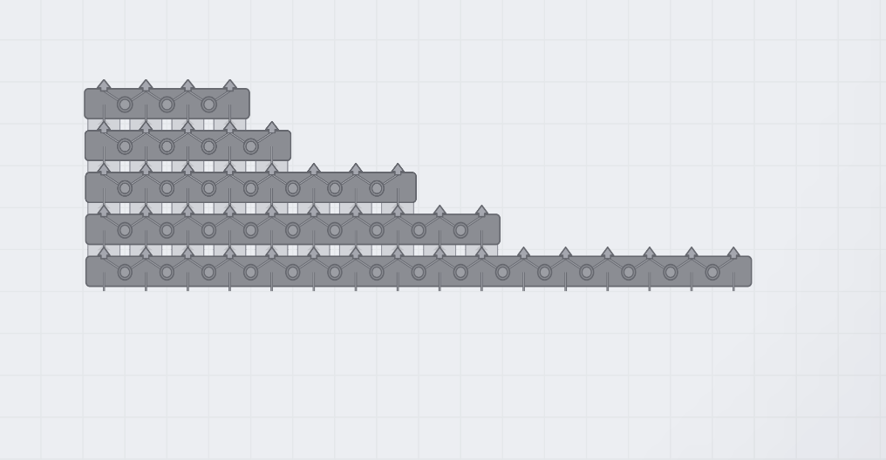

用途
多路平衡器作为原版 balancer 的变形体出现，而不是新的工具栏建筑。选择原版平衡器后按 T 即可切换，扩展版本按实际宽度占用 N×1 格。
核心功能
- 保留原版 2-way、合流器与分流器，同时加入 4 / 5 / 8 / 10 / 16 路平衡器。
- 每个输入槽的物品轮流分配到可用输出槽。
- 总吞吐按原版 2-way 平衡器的 N / 2 线性扩展，并自动读取原版的处理速度。
- 配合 Belt Speed Control 时，多路版本会自动获得相同的速度倍率。
- 变形体选择条使用紧凑的 4x、5x、8x、10x、16x 文字标签。
使用方法
- 选择原版平衡器后按 T 打开变形体列表。
- 选择符合输入/输出总线宽度的版本后，按其 N×1 占地规划空间。
- 启用 Key Reform 后可直接使用默认的 T+4、T+5、T+8、T+0、T+6 映射。
实机截图


兼容性与注意事项
不要与旧版独立 4-way / 8-way 平衡器 Mod 同时启用，以免重复注册。